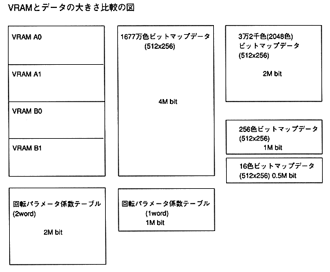

∙ In order to use VDP2 effectively, it is important how to place data on VRAM.
For example, when displaying 16.77 million bitmap images, all VRAM is used and other pictures cannot be displayed.
Next, we will explain each with an example of VRAM mapping. Bitmap is used as an example of image data. This is because the data size is fixed, so this figure can be used as a reference for direct mapping. In the cell format, the data size changes depending on how the data is stored, and if there are many common parts, the memory efficiency will be better than the bitmap.